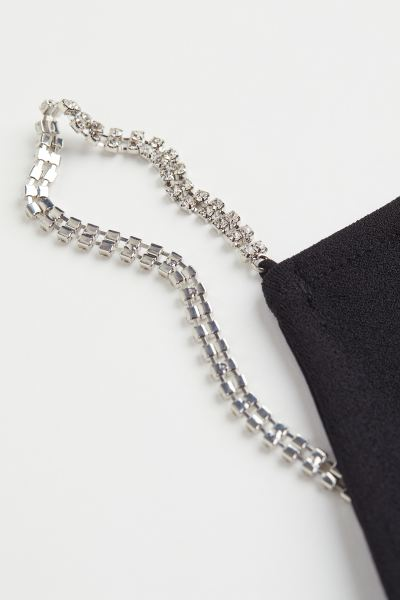
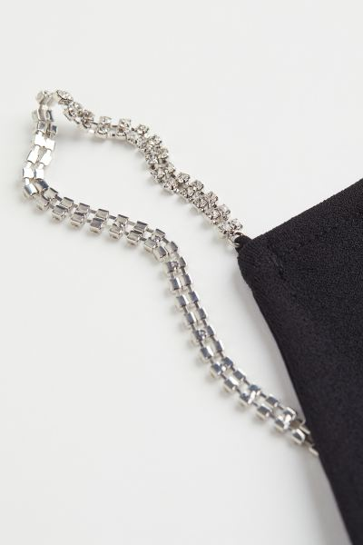
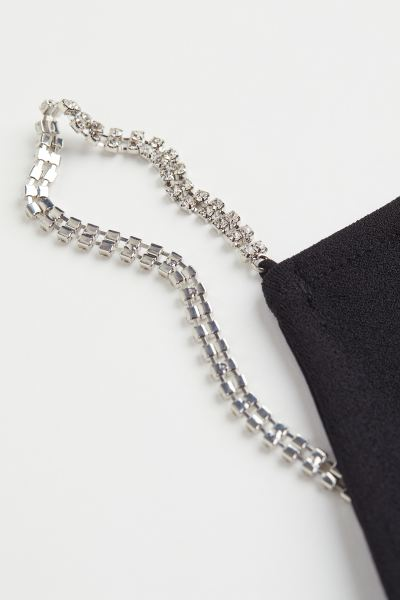

Hm.com / Dames / Campagne / Feestjurken
Zwart
Een korte, nauwsluitende jurk van elastische kwaliteit. De jurk is smal gesneden aan de bovenkant en heeft smalle schouderbandjes en een diep rugdecolleté.
 

Hm.com / Dames / Campagne / Feestjurken
Een korte, nauwsluitende jurk van elastische kwaliteit. De jurk is smal gesneden aan de bovenkant en heeft smalle schouderbandjes en een diep rugdecolleté.
